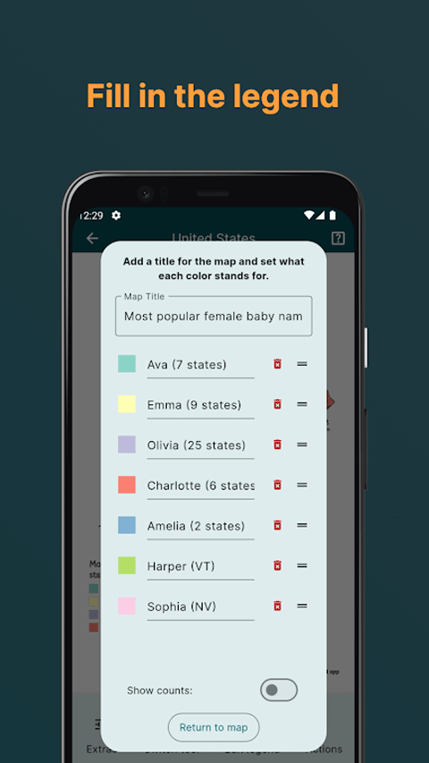
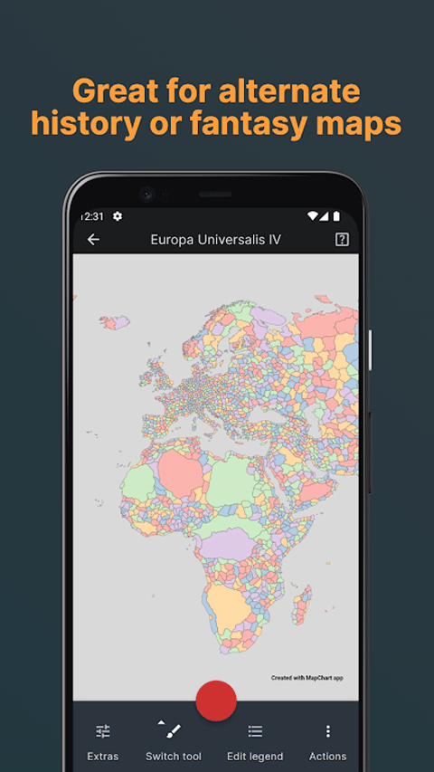

用 MapChart 把季度数据一键变地图，我的周报可视化工作流
以前做业务周报里的区域分布图要折腾半小时，现在 Excel 一丢、手机上补两笔、导出就能贴进飞书文档。把 MapChart 嵌进周报流水线的具体接法。
每周一上午十点之前，我的业务周报必须出稿。其中有一张固定的图——全国三十多个省级行政区的上季度业务完成率分布图。以前这张图是整个流程里最折腾的一环：数据在 Excel 里，先复制进某个在线工具，手工选色板、调整每个省的色块，导出图片后再插进飞书文档。整个过程大约三十分钟，遇到数据变动还要重来。
现在这张图的流程被我压缩到了八分钟，核心变化是把 mapchart官网 插进了原来那堆碎片化工具的中间。说具体怎么接的，以及这套工作流里容易断链的两个环节怎么处理。
旧流程的断点在哪里
先还原一下以前的做法。数据同事每周一早上九点半把一张 Excel 发过来，格式就是最朴素的两列——第一列省名，第二列完成率百分比。我拿到后打开某个在线地图涂色工具，手动把每一行数值填进对应的省份，或者粘贴进去让工具自动识别。问题是自动识别经常对不上中文省名和工具里的英文名，比如「内蒙古」变成「Inner Mongolia」就识别失败，然后不得不手动一个个拖。
填完之后选色板，工具默认给的色板往往不适合数据表达——热度过高用红、完成率正常用绿这种常识性映射要自己调。图例说明要改，默认的颜色十六进制代码没法直接放进周报。最后导出 PNG，检查一下清晰度，插进飞书文档。
整条链路断点有三处：省名匹配、色板映射、图例改写。每一处都要手动介入，而且三处之间没有数据传递——改了色板，图例要跟着重写，没有联动。
新流程怎么把 MapChart 嵌进去
现在的流程是这样的：Excel 进 MapChart 网页版 → 自动填色 → 手机 App 精修 → 导出进周报。四个环节，三处衔接点，每处都比旧流程少了手动操作。
第一步：Excel 导入，省名匹配只做一次
MapChart 网页版有一个数据导入功能，直接上传 Excel 或 CSV。系统会识别数值列，自动把数值区间映射到色板。关键是省名匹配这件事——MapChart 的中国底图用的就是中文省名，Excel 里写「内蒙古」它认「内蒙古」，不会跟你玩英文翻译那套。
导入后它自动分色，我只需要扫一眼分色区间是不是合理。比如完成率数据，默认可能分成 0-50/50-80/80-100 三档，但业务上我们习惯看 0-60/60-90/90+ 的节奏，这时候直接在色板编辑器里拖一下区间滑块就行，比以前逐格改颜色快得多。
第二步：配置导出到手机，地铁上补细节
MapChart 的网页版和我从官方下载的 Android App 配置文件互通。我在电脑上完成 Excel 导入和初步分色之后，把配置文件导出到手机——App 端打开同一个底图，所有分区的颜色、图例分组都已经在那里了。
这一步的衔接点是配置文件的格式，MapChart 用的是自己的 txt 配置，网页版导出时选手机 App 兼容模式就不会出问题。我试过直接复制配置文件内容，偶尔会有编码问题，用导出按钮就稳定。
第三步：手机上精修，包括图例和缩放
手机端的价值在两个地方。一是缩放聚焦——有些省份的边界线挤在一起，网页上用鼠标滚轮放大精度不够，手机双指捏合能精准定位到具体分区的间隙。之前涂浙江省内的地级市分布时，网页上经常误触旁边的县，手机放大后就没这个问题了。
二是图例编辑。MapChart 的图例编辑器可以把默认的颜色十六进制代码直接改成业务语言——「完成率 ≥100%」「80%-100%」「60%-80%」「<60%」，还能开关 Show counts 看每个分组覆盖了多少个省。手机端编辑的体验比网页端好，底部工具栏的 Edit legend 按钮点进去就是完整的编辑界面，省得网页上弹窗被浏览器工具栏挡住。
配图参考：

第四步：导出图片进飞书，收尾
App 端 Actions 菜单里选导出 PNG，分辨率直接选最高档，导出的图拖进飞书文档就行。整个过程不需要再开其他工具，也不用检查图片清晰度——默认导出就是周报够用的分辨率。
流程里最容易断链的两个环节
跑了六周之后，这套流程里有两个环节我观察到容易出问题，提前记录下来免得下次踩坑。
环节一：Excel 省名必须完全匹配
MapChart 的自动匹配是严格字符串匹配——我一开始没注意到这一点，后来去 mapchart文档 翻了一下数据格式要求才弄明白。Excel 里如果写了「内蒙古自治区」但底图上只标「内蒙古」，就匹配不上。遇到不匹配的行，系统不会报错，只是那个分区不填色——这很坑，因为一堆省填好了、只有一个空着，第一次跑的时候我以为是漏涂了，后来才发现是名称对不上。
我的处理方式：在 Excel 模板里固定一份省名列表，数据同事直接在模板上填数值，省名永远不要动。模板复制进项目文件夹，每次周报复用，从源头杜绝名称不匹配。
环节二：色板选错了要回头重跑
顺序型色板（从浅到深）适合数值型数据，但业务周报有时候需要分类对比——比如把省份分成「重点开拓」「维持现状」「缩减投入」三类，这时候应该用分类色板（Qualitative），而不是顺序色板。导入时默认给的是顺序色板，如果没注意、按热力图思路分色，图例看起来就很别扭。
处理方式很简单：导入完先看一眼色板对不对，不对的话直接在网页版换，不用重新导数据。色板和数据是分开的——换色板是重新映射数值到颜色，不影响已经匹配好的分区。
这套流程什么时候划算，什么时候不划算
目前每周八分钟搞定这张图，相比以前三十分钟，净省二十二分钟。一年下来就是十八个小时左右，够写三四篇周报的深度分析了。
但这套流程有它的边界。如果你的数据不是区域分布——比如时间序列、用户画像漏斗、功能使用热力图——MapChart 不是合适的工具，它就是为「分区涂色」这一件事设计的，别硬套。另外，如果只有十来个区域要涂（比如欧洲几个大国），手动点几下可能比导 Excel 还快，导入流程的 overhead 反而不划算。
还有一个场景值得提一下：如果你做的是游戏主题的地图涂装（比如钢铁雄心 IV 的架空历史势力图），Excel 导入就派不上用场了——那些底图的分区名是游戏内部代号，跟任何标准名称都对不上。这时候还是老老实实在手机或网页上手动涂，不过 MapChart 的缩放聚焦和 Extras 菜单里的一键全选功能能帮你省不少时间。

总体来说，把 MapChart 嵌进周报的区域分布图环节是我今年做过的效率提升里最干净的一笔——没有引入新工具、没有增加学习成本，只是把原来要手工填的那一段换成了数据导入，再用手机 App 的精修能力覆盖最后的手动调整。如果你的工作里也有类似的区域数据可视化需求，建议先试一次导入 Excel，十秒钟就能看到自动填色的效果，值不值一试即知。哦对了，这套工作流里用到的省名模板和色板映射规则，我顺手整理到了 GitHub 上，国内网络环境下看 Gitee 会更顺畅，还有一份放在 GitCode 作为多一份保障。